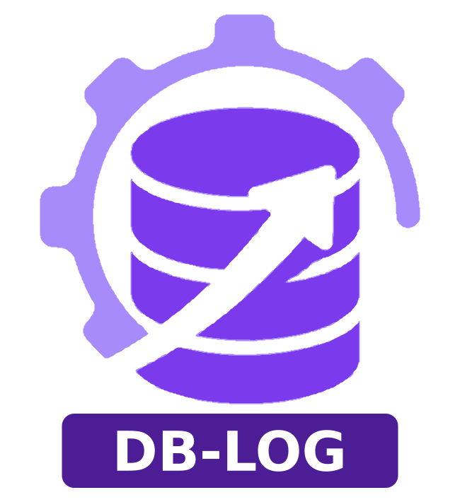

toolarium-db-changelog
A lightweight Java 11+ library for automated database schema migrations and rollbacks. Own changelog format, distributed locking, SHA-256 checksums, and comprehensive DDL/DML support.

A lightweight Java 11+ library for automated database schema migrations and rollbacks. Own changelog format, distributed locking, SHA-256 checksums, and comprehensive DDL/DML support.
Gradle:
implementation 'com.github.toolarium:toolarium-db-changelog:0.8.0'Maven:
<dependency>
<groupId>com.github.toolarium</groupId>
<artifactId>toolarium-db-changelog</artifactId>
<version>0.8.0</version>
</dependency>IChangelogRunner runner = ChangelogRunnerBuilder.builder()
.dataSource(dataSource)
.changelog("classpath:db/changelog/changelog-master.db.yaml")
.build();
runner.update();IChangelogRunner runner = ChangelogRunnerBuilder.builder()
.dataSource(dataSource)
.changelog("classpath:db/changelog/changelog-master.db.yaml")
.contexts(List.of("production", "shared"))
.labels(List.of("v1.0"))
.leaderElection(true)
.build();
runner.update();Apply, rollback, tag, sync, validate, and dry-run changesets with a simple API.
createTable, dropTable, addColumn, dropColumn, renameTable, renameColumn, modifyColumn, createIndex, dropIndex with auto-rollback.
addPrimaryKey, dropPrimaryKey, addForeignKey, dropForeignKey, addUniqueConstraint, dropUniqueConstraint, addNotNull, dropNotNull.
createSequence, dropSequence, createView, dropView with auto-rollback support.
dbms, tableExists, columnExists, indexExists, viewExists, sequenceExists, sqlCheck with and/or/not combinators and HALT/WARN/CONTINUE/MARK_RAN failure actions.
Clean .db.yaml, .db.xml, and .db.json with property substitution, includes, and format detection.
Via toolarium-leader-election with DATABASE strategy, configurable timeout, and no-op fallback for single-instance deployments.
SQL identifier validation, XXE protection, safe YAML deserialization, statement timeouts, and path normalization.
Continues on partial failure, reports all errors. Configurable rollback policy (WARN, FAIL, IGNORE).
Unified resolution across classpath, JARs, and file system via IChangelogResourceResolver. Replaceable via builder.
All operations are accessed through the IChangelogRunner interface:
| Method | Description |
|---|---|
update() | Apply all pending changesets |
update(int count) | Apply up to count pending changesets |
rollback(int count) | Rollback the last count applied changesets |
rollback(String tag) | Rollback to a named tag |
rollback(Instant dateTime) | Rollback to a point in time |
generateRollbackSql(int count) | Generate rollback SQL without executing (dry-run) |
tag(String tagName) | Tag the current database state |
sync() | Mark all pending changesets as executed without running (baselining) |
validate() | Check for checksum mismatches without executing |
status() | List pending and applied changesets |
history() | List all applied changesets |
clearChecksums() | Reset all stored checksums (forces recalculation) |
The library supports three native formats and one external import format:
| Format | Extension | Description |
|---|---|---|
| DB-Changelog YAML | .db.yaml / .db.yml | Recommended native format |
| DB-Changelog XML | .db.xml | Native XML format |
| DB-Changelog JSON | .db.json | Native JSON format |
| External SQL | .sql | Formatted SQL with --changeset directives |
format: toolarium-db-changelog/1.0
properties:
prefix: app_
changesets:
- id: create-users
changes:
- createTable:
tableName: ${prefix}users
columns:
- name: id
type: BIGINT
autoIncrement: true
constraints: { primaryKey: true, nullable: false }
- name: name
type: VARCHAR(100)
constraints: { nullable: false }
- name: email
type: VARCHAR(255)
constraints: { unique: true }
- id: add-phone
changes:
- addColumn:
tableName: ${prefix}users
columns:
- name: phone
type: VARCHAR(20)
- id: raw-sql-example
changes:
- sql: "INSERT INTO ${prefix}users (name, email) VALUES ('Admin', 'admin@example.com')"
rollback:
- sql: "DELETE FROM ${prefix}users WHERE email = 'admin@example.com'"<?xml version="1.0" encoding="UTF-8"?>
<dbChangelog format="toolarium-db-changelog/1.0">
<properties>
<property name="prefix" value="app_"/>
</properties>
<changesets>
<changeset id="create-users">
<changes>
<sql>CREATE TABLE ${prefix}users (id INT PRIMARY KEY, name VARCHAR(100))</sql>
</changes>
<rollback>
<sql>DROP TABLE ${prefix}users</sql>
</rollback>
</changeset>
</changesets>
</dbChangelog>All examples are in YAML format. The same structures apply to XML and JSON.
The following examples build a contact management schema step by step. Each change type shows a realistic use within that scenario.
- createTable:
tableName: person
columns:
- name: id
type: BIGINT
autoIncrement: true
constraints: { primaryKey: true, nullable: false }
- name: first_name
type: VARCHAR(100)
constraints: { nullable: false }
- name: last_name
type: VARCHAR(100)
constraints: { nullable: false }
- name: email
type: VARCHAR(255)
constraints: { unique: true }
- name: status
type: VARCHAR(20)
defaultValue: active
- name: created_at
type: TIMESTAMP
defaultValueComputed: CURRENT_TIMESTAMP# Remove the legacy contact table after data has been migrated to person
- dropTable:
tableName: legacy_contact# Rename person to contact as the domain model evolves
- renameTable:
oldTableName: person
newTableName: contact# Add phone and company columns to the contact table
- addColumn:
tableName: contact
columns:
- name: phone
type: VARCHAR(20)
- name: company
type: VARCHAR(200)
constraints: { nullable: false }
defaultValue: unknown# Remove deprecated columns no longer used by the application
- dropColumn:
tableName: contact
columns: [fax, pager]# Rename email to email_address for clarity
- renameColumn:
tableName: contact
oldColumnName: email
newColumnName: email_address# Increase the company column length after data review
- modifyColumn:
tableName: contact
columnName: company
newType: VARCHAR(500)# Index for email lookups
- createIndex:
tableName: contact
indexName: idx_contact_email
columns: [email_address]
# Unique composite index on name for deduplication
- createIndex:
tableName: contact
indexName: idx_contact_name
columns: [last_name, first_name]
unique: true# Remove the name index, replaced by a full-text search
- dropIndex:
tableName: contact
indexName: idx_contact_name# Make email_address required after backfilling existing rows
- addNotNullConstraint:
tableName: contact
columnName: email_address# Allow phone to be optional for contacts imported from external systems
- dropNotNullConstraint:
tableName: contact
columnName: phone# Sequence for generating contact reference numbers
- createSequence:
sequenceName: contact_ref_seq# Remove the sequence after switching to UUID-based references
- dropSequence:
sequenceName: contact_ref_seq# View for the dashboard showing only active contacts
- createView:
viewName: active_contacts
selectQuery: SELECT id, first_name, last_name, email_address FROM contact WHERE status = 'active'# Remove the view, replaced by an API-level filter
- dropView:
viewName: active_contacts# Seed initial data
- sql: "INSERT INTO contact (first_name, last_name, email_address) VALUES ('Jane', 'Doe', 'jane@example.com')"
# With manual rollback
changes:
- sql: "INSERT INTO contact (first_name, last_name, email_address) VALUES ('System', 'Admin', 'admin@example.com')"
rollback:
- sql: "DELETE FROM contact WHERE email_address = 'admin@example.com'"- insert:
tableName: contact# Deactivate contacts that have not logged in for a year
- update:
tableName: contact
whereClause: last_login < DATEADD('YEAR', -1, CURRENT_DATE)# Purge contacts marked for deletion
- delete:
tableName: contact
whereClause: status = 'deleted'# Tag the state after the initial contact schema is complete
- tagDatabase: v1.0-contact-schema# Document the purpose of the contact table
- setTableRemarks:
tableName: contact
remarks: Stores all customer and partner contact information# Document the email_address column
- setColumnRemarks:
tableName: contact
columnName: email_address
remarks: Primary email used for notifications and login# Bulk load initial contact data from CSV
- loadData:
tableName: contact
filePath: data/initial-contacts.csv
separator: ,
encoding: UTF-8# Upsert contact data: insert new rows, update existing by primary key
- loadUpdateData:
tableName: contact
filePath: data/contact-updates.csv
primaryKeyColumn: id# Execute user-provided Java migration logic
- customChange:
class: com.example.migration.MigrateContactDataThe referenced class must implement ICustomChangelogEntry with execute(Connection), rollback(Connection), getDescription(), and supportsRollback().
| Attribute | Default | Description |
|---|---|---|
id | (required) | Unique identifier for the changeset |
author | OS username | Author of the changeset |
filePath | Resource location | Overrides the resource location in the changeset identity |
comment | null | Descriptive comment |
runAlways | false | Re-execute on every run |
runOnChange | false | Re-execute when checksum changes |
failOnError | true | Halt on execution error |
runInTransaction | true | Wrap in a database transaction |
context | (none) | Context filter for conditional execution |
labels | (none) | Label filter for conditional execution |
A changeset is identified by the triple (id, author, filePath). By default, filePath is the resource location where the changeset was loaded from. If you reorganize your changelog files after changesets have been applied, use the filePath attribute to keep the identity stable:
changesets:
- id: create-users
filePath: db/changelogs/001-initial.db.yaml # keeps original identity
changes:
- createTable: ...Changesets can be conditionally executed based on active contexts and labels configured on the runner. A changeset runs only if at least one of its contexts/labels matches the runner's active set. Changesets without contexts/labels always run.
changesets:
- id: dev-seed-data
context: ["dev", "test"]
labels: ["v1.0"]
changes:
- sql: "INSERT INTO users (name) VALUES ('Dev User')"runAlways: true re-executes the changeset on every update, regardless of whether it was already applied. Useful for stored procedures or views that should always be refreshed.
runOnChange: true re-executes only when the changeset content (checksum) has changed since the last execution.
changesets:
# Refreshed on every run
- id: refresh-view
runAlways: true
changes:
- createView:
viewName: active_users
selectQuery: SELECT id, name FROM users WHERE status = 'active'
# Re-runs only when the SQL changes
- id: create-report-proc
runOnChange: true
changes:
- sql: "CREATE OR REPLACE PROCEDURE generate_report() ..."failOnError: false allows execution to continue even if the changeset fails. The error is logged but does not halt the migration.
runInTransaction: false disables the transaction wrapper. Needed for DDL that cannot run inside a transaction on some databases (e.g., CREATE INDEX CONCURRENTLY on PostgreSQL).
changesets:
- id: optional-cleanup
failOnError: false
changes:
- sql: "DROP TABLE IF EXISTS temp_data"
- id: concurrent-index
runInTransaction: false
changes:
- sql: "CREATE INDEX CONCURRENTLY idx_users_email ON users (email)"changesets:
- id: full-example
author: john
comment: "Add audit columns to users table"
filePath: db/changelogs/v1/001-audit.db.yaml
context: ["production", "staging"]
labels: ["v2.0", "audit"]
runOnChange: false
runAlways: false
failOnError: true
runInTransaction: true
preconditions:
onFail: WARN
checks:
- tableExists: users
changes:
- addColumn:
tableName: users
columns:
- name: created_by
type: VARCHAR(100)
- name: updated_at
type: TIMESTAMP
rollback:
- dropColumn:
tableName: users
columns: [created_by, updated_at]Preconditions allow changesets to check database state before execution:
| Precondition | Description |
|---|---|
dbms | Check the database type (h2, postgresql, mysql, ...) |
tableExists | Check if a table exists |
columnExists | Check if a column exists in a table |
indexExists | Check if an index exists |
viewExists | Check if a view exists |
sequenceExists | Check if a sequence exists |
foreignKeyExists | Check if a foreign key exists |
primaryKeyExists | Check if a primary key exists |
sqlCheck | Execute SQL and check the result |
changeSetExecuted | Check if a specific changeset was already applied |
runningAs | Check the database user |
| Action | Description |
|---|---|
HALT | Stop execution with an error (default) |
WARN | Log a warning and skip the changeset |
CONTINUE | Silently skip the changeset |
MARK_RAN | Skip but record the changeset as executed |
Preconditions can be combined with and, or, and not operators.
changesets:
- id: h2-only-change
preconditions:
onFail: WARN
checks:
- dbms: h2
- tableExists: users
changes:
- sql: "ALTER TABLE users ADD COLUMN extra VARCHAR(50)"Rollback SQL is determined in priority order:
The ChangelogRollbackPolicy controls behavior when no rollback is available:
| Policy | Description |
|---|---|
WARN | Log a warning and skip (default) |
FAIL | Fail the entire rollback operation |
IGNORE | Silently skip without warning |
IChangelogRunner runner = ChangelogRunnerBuilder.builder()
.dataSource(dataSource)
.changelog("classpath:db/changelog.db.yaml")
.rollbackPolicy(ChangelogRollbackPolicy.FAIL)
.build();All configuration is done through the ChangelogRunnerBuilder:
| Builder method | Default | Description |
|---|---|---|
dataSource(DataSource) | (required) | The JDBC data source |
changelog(String) | null | Path to the root changelog file |
trackingTable(String) | DB_CHANGELOG | Name of the tracking table |
lockTable(String) | DB_CHANGELOG_LOCK | Name of the lock table |
leaderElection(boolean) | false | Enable distributed locking |
contexts(List<String>) | (none) | Active contexts for filtering |
labels(List<String>) | (none) | Active labels for filtering |
snapshotPolicy(ChangelogSnapshotPolicy) | NONE | When to capture pre-execution snapshots |
rollbackPolicy(ChangelogRollbackPolicy) | WARN | Behavior when no rollback is available |
objectQuotingStrategy(ChangelogObjectQuotingStrategy) | NONE | SQL identifier quoting (NONE or QUOTE_ALL) |
resourceResolver(IChangelogResourceResolver) | Default resolver | Custom resource resolver for loading changelogs |
Changelog files are resolved via IChangelogResourceResolver in this order:
classpath: prefix is used)All paths are normalized automatically via FileUtil.simplifyPath(). The classpath: prefix restricts resolution to classpath only.
IChangelogRunner runner = ChangelogRunnerBuilder.builder()
.dataSource(dataSource)
.changelog("db/changelog.db.yaml")
.resourceResolver(customResolver)
.build();Implement IChangelogResourceResolver to provide custom resolution logic (e.g., loading from a database, remote URL, or encrypted store).
The library can parse and import changelogs from external tools, allowing gradual migration to the DB-Changelog format.
| Source | Formats | Detection |
|---|---|---|
| Liquibase | XML, YAML, JSON, SQL | databaseChangeLog root key, Liquibase XML namespace, --changeset directives |
| Flyway | SQL | V*__*.sql (versioned), R__*.sql (repeatable) naming convention |
The built-in LiquibaseSqlChangelogParser reads .sql files with --changeset author:id directives:
--liquibase formatted sql
--changeset john:create-users
CREATE TABLE users (id INT PRIMARY KEY, name VARCHAR(100));
--rollback DROP TABLE users;
--changeset john:add-email
ALTER TABLE users ADD COLUMN email VARCHAR(255);A migration tool will convert external changelogs to the DB-Changelog format:
// Liquibase migration
IChangelogMigrator migrator = ChangelogMigratorBuilder.builder()
.sourceChangelog("classpath:db/changelog/liquibase-master.xml")
.outputDirectory("db/changelog/migrated/")
.outputFormat("YAML")
.build();
migrator.migrate();
// Flyway migration
IChangelogMigrator migrator = ChangelogMigratorBuilder.builder()
.flywayDirectory("classpath:db/migration/")
.flywayHistoryTable(dataSource)
.outputDirectory("db/changelog/migrated/")
.outputFormat("YAML")
.build();
migrator.migrate();The Flyway migrator reads V*__*.sql files (versioned migrations), R__*.sql files (mapped to runOnChange: true), and the flyway_schema_history table to preserve applied state.
| Feature | toolarium-db-changelog | Liquibase |
|---|---|---|
| Locking | Self-healing lease expiry via leader-election (no manual releaseLocks) | Database row lock, requires manual release on crash |
| Checksums | SHA-256, stable, no version prefix | MD5/SHA with version prefix, requires clearCheckSums after upgrades |
| Configuration | Explicit builder pattern | Thread-local scope chain |
| Context/Label | Unified concept | Two separate mechanisms |
| Custom changes | Single ICustomChangelogEntry | Three interfaces (CustomTaskChange, CustomSqlChange, CustomTaskRollback) |
| Own format | .db.yaml / .db.xml / .db.json with less nesting | Verbose XML-centric format |
| Extensions | Java SPI, no classpath scanning | Classpath scanning for extensions |
| Tracking table | Configurable name | Fixed DATABASECHANGELOG |
| Import | Can read Liquibase changelogs | N/A (is the source) |
| Feature | toolarium-db-changelog | Flyway |
|---|---|---|
| Rollback | Free and built-in (auto-rollback, Level 1 SQL rollback) | Paid feature (Teams/Enterprise only) |
| Dry-run | Free via generateRollbackSql() | Paid feature |
| Preconditions | Full system (dbms, tableExists, sqlCheck, and/or/not) | None |
| Database abstraction | Structured DDL change types with per-dialect SQL generators | SQL-only (no abstraction) |
| Multiple changesets per file | Yes, individually tracked | No, one migration per file |
| runAlways / runOnChange | Yes, per changeset | Repeatable only (R__ files) |
| Context/Label filtering | Yes | No |
| Diff / generateChangelog | Planned | No |
| Import | Can read Flyway migration files | N/A (is the source) |
| Protection | Description |
|---|---|
SQL identifier validation | Table and lock table names validated against [A-Za-z_][A-Za-z0-9_]* |
Safe YAML parsing | SnakeYAML SafeConstructor prevents arbitrary class instantiation |
XXE protection | XML parsing disables external entities, DTD, entity references, external DTD/schema access |
Default value escaping | Single quotes doubled in SQL default values to prevent injection |
Regex-safe splitting | SQL statement delimiters treated as literal strings via Pattern.quote() |
Statement timeout | All SQL statements have a 300-second timeout to prevent indefinite blocking |
Identity validation | Changeset id and author reject the | separator character to prevent key collisions |
Path normalization | All resource paths normalized via FileUtil to prevent traversal |
DataSource validation | Null checks before every database operation |
Safe lock release | Lock release exceptions suppressed to avoid masking the original error |
(id, author, filePath) tripleDB_CHANGELOG): records applied changesets with SHA-256 checksumsDB_CHANGELOG_LOCK): managed by toolarium-leader-election (DATABASE strategy)com.github.toolarium.db.changelog
IChangelogRunner # Main entry point interface
IChangelogContext # Runtime execution context
ChangelogRunnerBuilder # Builder for configuration
config/ # Configuration, policies, enums
model/ # Public model classes and interfaces
column/ table/ index/ constraint/ sequence/ view/ sql/ dml/ precondition/
exception/ # Exception hierarchy
impl/ # All implementation details
checksum/ executor/ lock/ parser/ resolver/ rollback/ sql/ tracking/ precondition/I prefix (e.g., IChangelogRunner)Impl suffix in impl/ subpackagesThe following databases are integration tested via Testcontainers on every build:
| Database | Container | Notes |
|---|---|---|
H2 | Embedded (in-memory) | Primary unit test database, always available |
PostgreSQL | postgres:16-alpine | Full support, TIMESTAMP column type |
MySQL | mysql:8.0 | Full support, derived table subqueries for self-referencing queries |
MariaDB | mariadb:11 | Full support, TEXT instead of CLOB |
SQL Server | mssql/server:2022-latest | Full support, DATETIME instead of TIMESTAMP (binary type in SQL Server) |
Oracle | gvenzl/oracle-xe:21-slim-faststart | Full support, alias syntax without AS keyword |
HSQLDB | Embedded (in-memory) | Full support, embedded database |
Derby | Embedded (in-memory) | Full support, Apache Derby |
SQLite | Embedded (in-memory) | Full support, lightweight embedded |
CockroachDB | cockroachdb/cockroach:v24.1.0 | Full support, PostgreSQL wire-compatible |
DB2 | db2_community/db2:11.5.9.0 | Full support, slow container startup (2-5 min) |
Firebird | jacobalberty/firebird:v4.0 | Full support via Jaybird JDBC driver |
TiDB | pingcap/tidb:v7.5.0 | Full support, MySQL wire-compatible |
YugabyteDB | yugabytedb/yugabyte:2024.1.3.0 | Full support, PostgreSQL wire-compatible |
Run integration tests with: source cb --setenv && cb -Pintegration
The generic SQL generator produces standard ANSI SQL that works on any JDBC-compliant database. The following ANSI SQL-compliant databases are expected to work but have not been integration tested:
| Database | Reason not tested |
|---|---|
Snowflake | Cloud-only, requires account, no local Docker image |
SAP HANA | Requires SAP license, no public Docker image |
Sybase / SAP ASE | No public Docker image, proprietary driver |
Informix | Complex container setup, limited community use |
EnterpriseDB | Docker image requires registry authentication (PostgreSQL wire-compatible, expected to work) |
The library automatically detects the database via JDBC metadata and adapts:
| Adaptation | Databases affected |
|---|---|
| DATETIME instead of TIMESTAMP for datetime columns | SQL Server (where TIMESTAMP is a binary rowversion type) |
| TEXT instead of CLOB for large text columns | MySQL, MariaDB |
| Derived table subqueries for self-referencing INSERT/UPDATE | MySQL, MariaDB |
| Table alias without AS keyword | Oracle |
| Case-insensitive table existence check (upper + lowercase) | PostgreSQL, MySQL |
This project is licensed under the MPL-2.0 License.